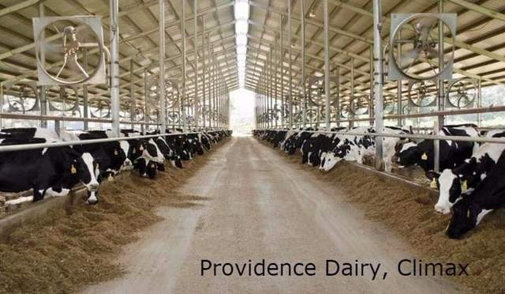

About

Providence Dairy Incorporated is a commercial dairy farm near Bainbridge in southwest Georgia. The farm is owned by Paul Johnson, DVM, a veterinarian.
What we do
- Dairy farming: we milk about 1,200 dairy cows and produce milk for sale.
- Calf care: we care for and raise the calves born on the farm.
- Veterinary care: Dr. Johnson provides large animal veterinary care for our own herd only.
Business details
- Legal name: Providence Dairy Incorporated
- Address: 195 Cedar Grove Road, Climax, GA 39834
- Office: (229) 495-5150
- Email: paul@prv.farm
Why we send text messages
We text only the owner and key managerial employees, and only after each person signs our consent form. The texts are about orders, deliveries, scheduling and farm business. We never send marketing texts. Reply STOP to opt out at any time.
Contact
Providence Dairy Inc.
195 Cedar Grove Road
Climax, GA 39834
Office line: (229) 495-5150
Email: paul@prv.farm
Text messaging
Only the owner and key managerial employees may enroll, and only after each person signs the paper Employee SMS Consent and Agreement. Verbal instructions do not replace that signature. Merely giving a phone number does not enroll someone. There are no public subscribers. Messages are about orders, deliveries, scheduling and farm business. No marketing messages are sent.
Message frequency varies. Message and data rates may apply. Reply STOP to opt out at any time. Reply HELP for help.
Privacy
We never sell, rent or share mobile numbers or text messaging opt-in data with third parties or affiliates for marketing or promotional purposes. SMS opt-in or consent may be shared only with providers that help deliver these text messages, including platform providers and phone companies, as the SMS Privacy Policy describes. Your number is used only to communicate with you about our business.